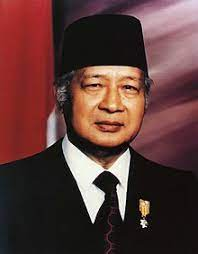
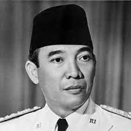
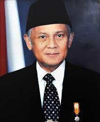
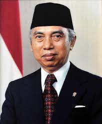
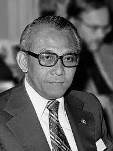

TOKOH PENTING DALAM ORDE BARU
1) Soeharto 2) Ir. Soeakrno 3) B.J. Habibie 4) Adam Malik 5) Widjojo Nitisastro

Soeharto merupakan figur sentral dari rezim Orde Baru.
Ia menjabat sebagai Presiden Indonesia selama 32 tahun,
mulai dari tahun 1967 hingga 1998. Selama masa kepemimpinannya,
Soeharto berhasil mengatasi krisis ekonomi dan politik
yang mendera Indonesia pasca-pemerintahan Soekarno. Ia
juga berhasil memperkuat infrastruktur dan perekonomian
Indonesia serta meningkatkan stabilitas politik dan keamanan.
Namun, pemerintahan Soeharto juga dicatat dengan berbagai
pelanggaran hak asasi manusia dan korupsi.

Soekarno adalah Presiden Indonesia pertama, memimpin dari
tahun 1945 hingga 1967. Ia dikenal karena kepribadian yang
sangat karismatik dan peran kunci dalam perjuangan kemerdekaan
Indonesia. Meskipun demikian, pemerintahan Soekarno dihantui oleh
masalah seperti tingginya inflasi, korupsi, dan konflik internal
di pemerintahan. Akhirnya, Soekarno digulingkan oleh Soeharto
melalui peristiwa G30S/PKI.

B.J. Habibie menjabat sebagai Wakil Presiden Indonesia di bawah pemerintahan Soeharto. Ia kemudian menjadi Presiden Indonesia setelah Soeharto mengundurkan diri pada tahun 1998. Habibie dikenal sebagai tokoh cemerlang di bidang teknologi dan berhasil menghadapi krisis ekonomi yang melanda Indonesia pada tahun 1997.

Adam Malik memegang posisi Menteri Luar Negeri Indonesia di era pemerintahan Soeharto. Peranannya penting dalam menjaga stabilitas geopolitik dan hubungan internasional Indonesia. Ia berhasil menjalin hubungan yang baik dengan negara-negara Barat dan Timur.

Widjojo Nitisastro menjabat sebagai Menteri Keuangan Indonesia pada masa pemerintahan Soeharto. Ia merupakan tokoh kunci dalam pembangunan ekonomi Indonesia di era Orde Baru. Nitisastro berhasil merancang program stabilisasi ekonomi dan deregulasi yang membantu Indonesia pulih dari krisis ekonomi.